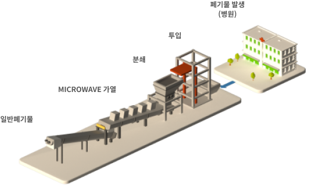
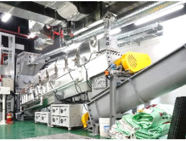
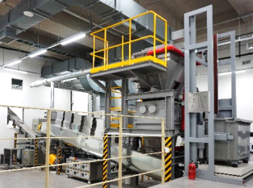

ENERGY
버려지는 폐기물을 에너지 자원으로
바꾸어 지속가능한 내일을
만들어 가고 있습니다
HOME
사업소개
에너지
SCROLL DOWN
Sterilization
의료폐기물
멸균분쇄기
제작 및 운영관리
에코비트 엔솔은 멸균분쇄기를 제작
및 운영관리를 지원하여, 의료폐기물이
발생하는 병원에서 발생하는 즉시
자가처리하도록 하여, 감염위험을 제거한
친환경 폐기물 처리 방법을 제공하고
있습니다.

의료폐기물
멸균분쇄기 실적
국내 유일의 멸균분쇄기 설치 및
인허가 경험 보유
-
01
멸균분쇄 관련 특허 등록 제10-2018-0161094호
모듈형 파쇄기를 적용한
사후관리를 용이하게 할 수 있는
의료폐기물 멸균 분쇄기
탈부착 모듈형 멸균분쇄기술 -
02
멸균분쇄 관련
국책과제 수행- 1996 ~ 1997
- 산자부 지원 과제 수행
- 2001 ~ 2004
- 환경부 지원 과제 수행
- 2009 ~ 2011
- 환경부 지원 과제 수행
-
03
관련 업무 수행 실적
- 1995
- 멸균분쇄기 관련법 도입을 위한
미국 사례 조사(복지부)
- 2000
- 멸균분쇄관련법 환경부 이관 후
미국, 유럽, 일본 등 국외사례
조사 협조
총 6회의 교육환경보호에 관한 법률 개정안 국회 제출
국내 유일의 멸균분쇄기 설치 및
인허가 경험 보유
-
2021
신촌세브란스, 삼성서울병원,
서울아산병원, 서울 성모병원 등
10여개 병원과 도입 검토 중 -
2020
멸균분쇄기
제작 및 운영관리500kg/hr급 IMS-500 제작 완료 및 설치
운영관리 용역계약 체결 후 가동 중

국산 최초 멸균 분쇄기
제작 및 설치400kg/hr급 IMS-400 제작 완료 및 설치
운영관리 용역계약 체결 후 가동 중
 -
2009
멸균분쇄기 수입 및 인허가 수행
Sanitec(美)의 814kg/hr급 멸균분쇄기 수입
인허가 절차 주도적 추진

-
STEP 1
의료폐기물
-
STEP 2
계량
-
STEP 3
투입
-
STEP 4
파쇄
-
STEP 5
멸균
-
STEP 6
건조
-
STEP 7
배출
-
STEP 8
일반 사업장 폐기물
의료폐기물의 80%는 멸균분쇄기로 처리
위해 의료 폐기물
병리계: 시험용기, 폐시험관, 배지 등
상성: 깨진 유리병 등 금속을 제외한 날카로운 폐기물
혈액오염: 폐혈액백, 혈액투석시 사용된 것으로 액상 제외
일반 의료 폐기물
혈액, 분비물, 배설물이 묻어 있는 탈지면, 붕대 일회용 기저귀, 생리대, 일회용 주사기, 수액세트
-
전용봉투
-

멸균분쇄기
-

일반 사업장
폐기물 소각장
의료폐기물의 20%는
소각 처리
기타 의료 폐기물/조직물류
인체/동물의 조직, 장기 등
-


전용용기
-

전용차량
-
전용 소각장